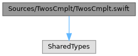

|
TwosCmplt 0.1
A Two's Complement Library Implemented in Swift
|
A library for using Two's Complement Arithmetic Using a Swift struct. More...
import SharedTypes;
A library for using Two's Complement Arithmetic Using a Swift struct.
This file contains the TwoCmplt struct that includes most properties for implementing two's complement arithmetic.